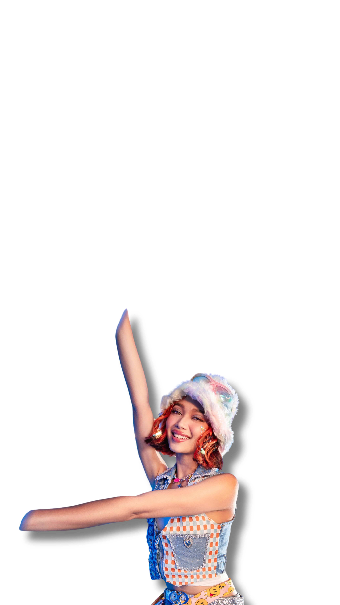
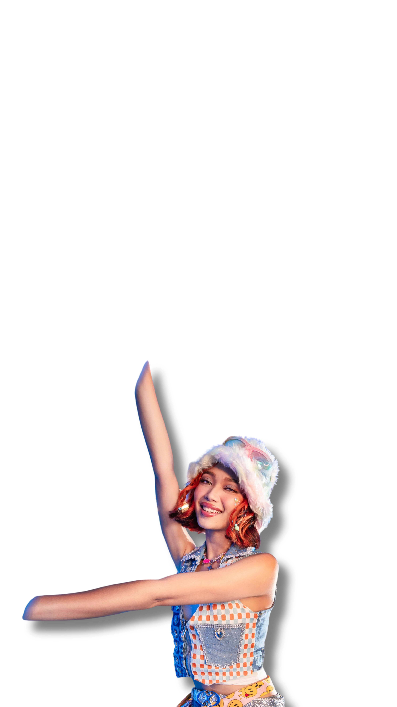

BINI JHOANNA
Jhoanna Christine Robles
Jhoanna Christine Burgos Robles, born on January 26, 2004,
and commonly referred to as Jhoanna, is a rising Filipino
performer. Within the Filipino girl group BINI, she serves
as the leader, the second youngest member, and takes on
roles as the lead vocalist and lead rapper.
Maria Nicolette Vergara
Maria Nicolette Vergara, born on September 14, 2001, and
popularly known as Colet, is a budding Filipino entertainer.
Within the Filipino girl group BINI, she holds the position
of the group's second eldest member, as well as being the
main vocalist, lead dancer, and lead rapper.
BINI MIKHA
Mikhaela Janna Jimenea Lim
Mikhaela Janna Jimenea Lim, born on November 8, 2003, and
commonly recognized as Mikha, is an emerging Filipino
entertainer. Within the Filipino Girl Group BINI, she holds the
position as the group's third youngest member, while also
taking on key roles as the main rapper, lead dancer, and visual.
BINI MALOI
Mary Loi Yves Kipte Ricalde
Mary Loi Yves Kipte Ricalde, born on May 27, 2002, and
widely
recognized as Maloi, is a promising Filipino performer.
Within the Filipino girl group BINI, she assumes the role of
the third eldest member and serves as the group's main vocalist.
BINI AIAH
Maraiah Queen Arceta
Maraiah Queen Arceta, born on January 27, 2001, and
commonly
known as Aiah, is an emerging Filipino entertainer.
She holds
the position of the eldest member within the Filipino
girl group BINI, while also taking on roles as the main rapper
and visual.
BINI STACEY
Lindtsey Stacey Aubrey Sevilleja
Lindtsey Stacey Aubrey Sevilleja, born on July 13, 2003, and
widely recognized as Stacey, is an up-and-coming Filipino
performer. Within the Filipino girl group BINI, she holds the
position as the fifth eldest member, taking on vital roles as
the main rapper and lead dancer.
BINI GWEN
Gweneth L. Apuli
Gweneth L. Apuli, born on June 19, 2003, and commonly
referred to as Gwen, is a talented Filipino performer
and singer. Within the Filipino girl group BINI, she holds
the position as the fourth eldest member, showcasing her
skills as the lead vocalist and lead rapper.
BINI SHEENA
Sheena Mae Catacutan
Sheena Mae Catacutan, born on May 9, 2004, and more
widely recognized as Sheena, is a budding Filipino
performer. Within the Filipino girl group BINI, she
assumes the role of the youngest member, showcasing
her talents as themain dancer.


 
